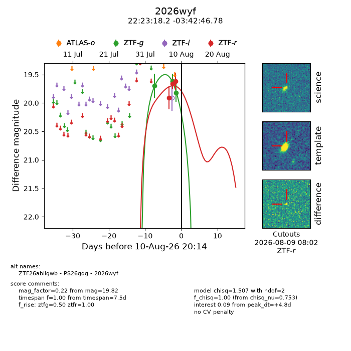
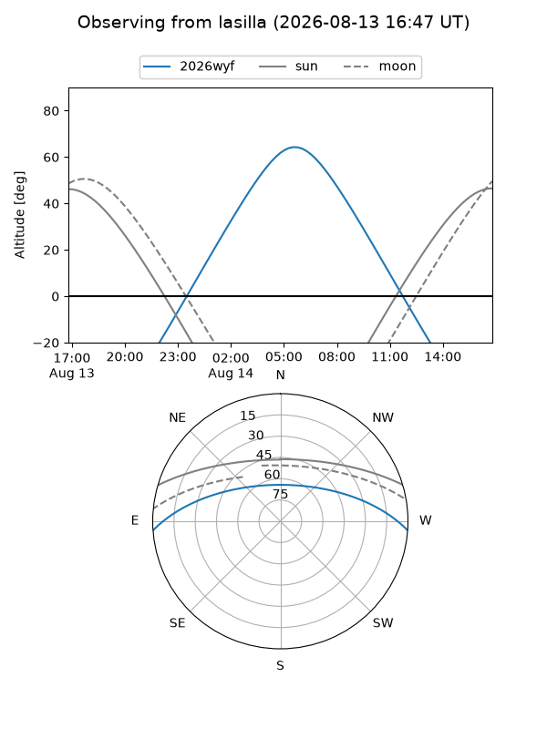
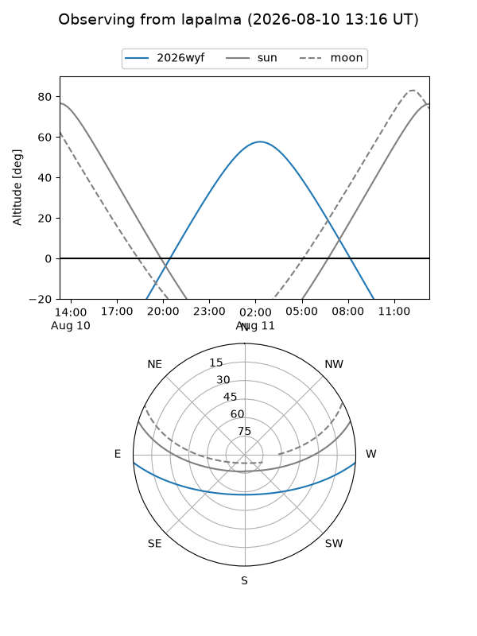
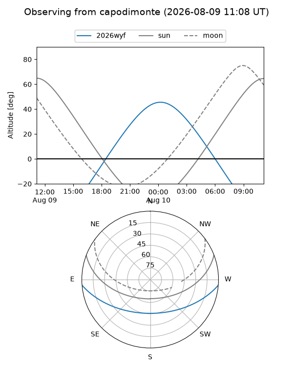
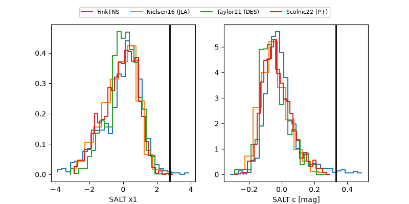

2026wyf
Target 2026wyf at 2026-08-10 20:16
Aliases and brokers:
FINK-ZTF: ztf.fink-portal.org/ZTF26abligwb
Lasair-ZTF: lasair-ztf.lsst.ac.uk/objects/ZTF26abligwb
ALeRCE-ZTF: alerce.online/object/ZTF26abligwb
YSE-PZ: ziggy.ucolick.org/yse/transient_detail/2026wyf
TNS name: wis-tns.org/object/2026wyf
Direct TNS query: direct search
alt names
ZTF26abligwb (ztf,fink_ztf)
2026wyf (tns,yse)
PS26gqg (panstarrs)
Coordinates:
equatorial (ra, dec) = 335.8257,-3.71299
equatorial (HMS+DMS) = 22:23:18.17,-03:42:46.78
galactic (l, b) = (59.8841,-47.60361)
Flags:
TNS type: nan
peak dt: +4.8
Photometry:
last ztfg=19.82, ztfr=19.62
3 ztfg, 3 ztfr detections
Lightcurve

Visibility



Additional plots
